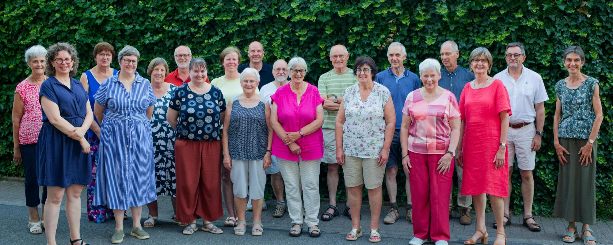

Samen zingen. Samen klinken.
Het Ceciliakoor is een gemengd koor van een vijfentwintigtal zangers uit Sint-Niklaas en omgeving. Al meer dan tachtig jaar brengt het koor mensen samen die graag zingen en mooie muziek willen maken.
Voor ons zit de kracht van een koor in het sámen muziek maken. Elke stem draagt bij aan het geheel en juist die combinatie maakt het zingen boeiend. We houden van de uitdaging om een muziekstuk op onze eigen manier vorm te geven en er telkens opnieuw iets moois van te maken.
Het Ceciliakoor heeft een lange traditie in de muziek van J.S. Bach, met onder meer uitvoeringen van verschillende passies. Tegelijk staan we open voor andere stijlen en projecten. We zingen zowel grote koorwerken als lichtere en meer eigentijdse programma’s en werken daarbij graag samen met andere koren, solisten en muzikanten.
Door de jaren heen groeide zo een gevarieerd repertoire, met concerten en projecten die telkens een andere muzikale sfeer brengen. We zingen ook bij huwelijken, uitvaarten en tijdens eucharistievieringen, momenten waarop muziek een bijzondere plaats kan innemen.
Wat we ook zingen en waar we ook optreden, het uitgangspunt blijft hetzelfde: met plezier muziek maken en genieten van wat we als koor kunnen neerzetten.

